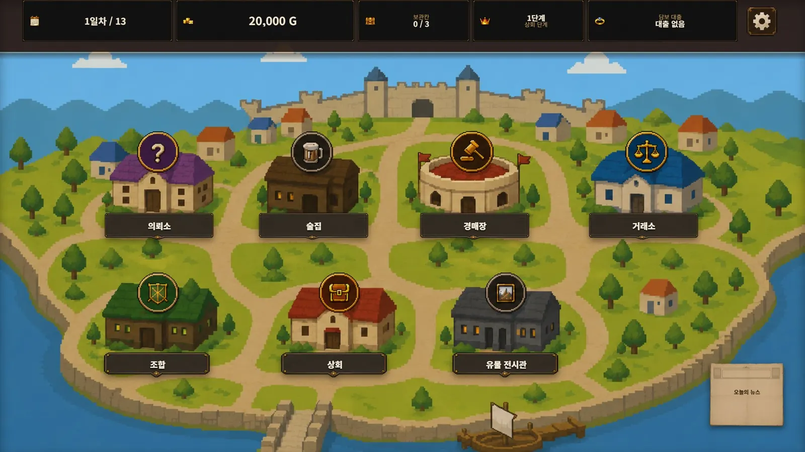
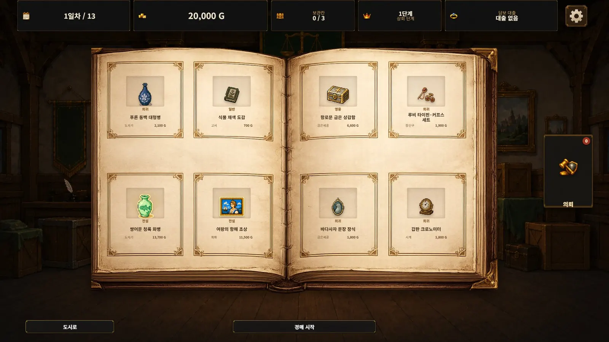
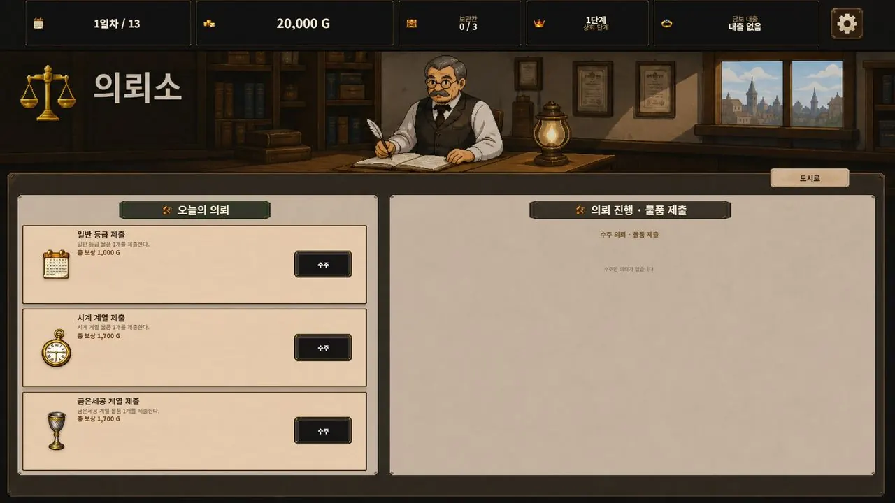
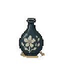
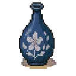
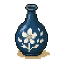
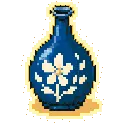
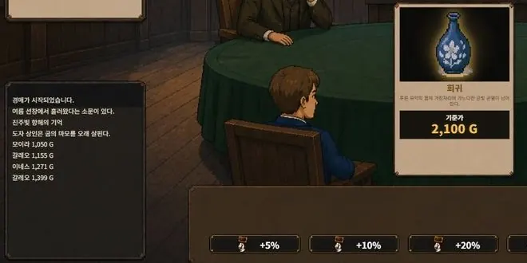
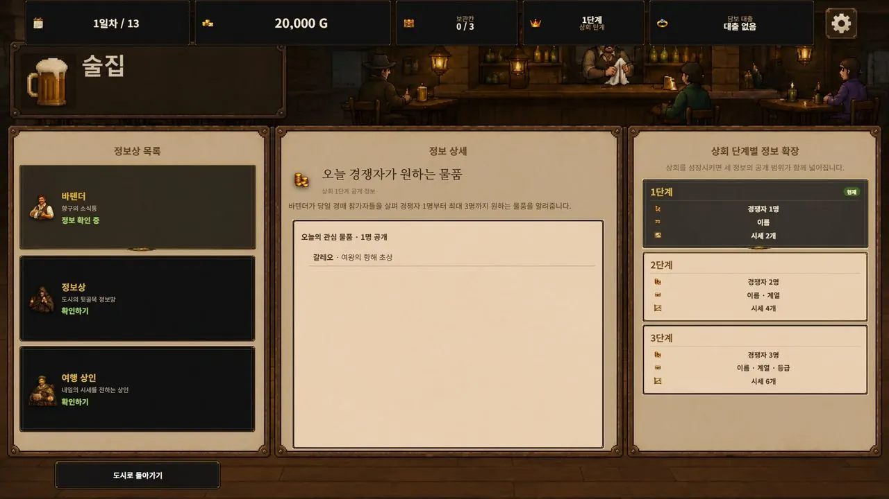

하루 8개씩 나오는 경매품을 사서, 의뢰, 세트, 시세 중 어디에 쓸지 정합니다
경매는 15초에서 시작해 입찰이 들어올 때마다 3초씩 늘고, 마지막 입찰자가 가져갑니다. 한 판은 약 10분입니다.
팀 제출 영상입니다. 아래 정지 화면과 함께 실제 플레이 흐름을 볼 수 있습니다. 재생이 제한되면 아래 YouTube 링크로 열 수 있습니다.

1도시오늘의 의뢰와 시세를 확인합니다
2오늘의 8점등급, 계열, 기준가를 비교합니다- 3경매+5, 10, 20%로 호가를 올리거나 패스합니다

4처분, 결산의뢰에 납품하거나 거래소에 팔고 다음 날로
팀 제출 플레이 영상 보기, YouTube ↗화면은 제출 문서에 실린 최종 빌드 화면(2026.08.08)입니다. 팀 프로젝트이며, 장면 배경과 경매품 그림은 팀이 AI로 생성했습니다.
3인 팀에서 기획, 경제 설계, 사운드, QA를 맡았습니다
NHN NAN 2026 해커톤 사전과제, 2026.07 – 08.10 제출, 시스템 구현과 아트, UI는 팀원이 맡았습니다.
제가 한 것
- 통합 기획과 개정 근거 문서
- 콘텐츠, 의뢰, 유물 명세, 의뢰 보상 재설계
- 사운드 명세, 선별, 장면 배치
- 기능, 밸런스 QA와 인계 문서
팀원이 한 것
- 시스템 구현: 엔진, 상태, 밸런스 로직
- 아트, UI
- 제가 짠 보상 표를 게임에 넣은 구현 커밋
AI가 한 것
- 경매품 그림과 장면 배경 생성(팀)
- 플레이 중 경매품 이름, 설명, 소문 문구 생성
- 제가 맡긴 음원 후보 찾기, 효과음 편집, 음량 측정
한 길이 다른 길을 지우지 않게, 보상과 정보의 구조를 계산으로 고치는 경제 설계
의뢰 한 건이 세트 판매의 약 5.6배를 벌어, 세트 수집이 장식이 됐습니다
완료 보너스가 상회 단계에만 붙어 있어, 가장 싼 일반 물건으로 의뢰를 끝내는 길이 늘 이겼습니다.
4단계, 일반 물건 한 점으로 남기는 순익
5.6배
등급이 오를수록 의뢰 순익은 오히려 줄었습니다(일반 +7,545 → 전설 +5,248).
“일반 품목 클리어 보상이 7500G 라서, 6종 세트를 완성할 필요 없이 … 쉽게 깨지는 경향이 있네요.”
계산 조건
4단계, 10~12일차, 일반 물건(기준가 1,900G) 기준입니다. 의뢰 보상 = 기준가 1,900 + 완료 보너스 7,500 = 9,400G, 페어 판매가 = 1,900 × 페어 배수 1.68 = 3,192G입니다.
낙찰가 1,855G는 게임의 실제 호가 로직을 4,000회 돌려 잰 값입니다. 9,400 − 1,855 = +7,545, 3,192 − 1,855 = +1,337, 비율은 약 5.64배입니다.
당시 완료 보너스는 [0, 3,000, 4,500, 6,000, 7,500] 한 줄뿐이라 등급도 의뢰 종류도 보지 않았습니다.
초반은 의뢰로 버티고, 후반은 세트로 넘어가게 하자고 정했습니다
넘어갈 때를 튜토리얼로 가르치지 않고, 플레이어가 보상 숫자로 느끼게 하는 것이 목표였습니다.
초반 숫자
1~2일차에는 일반 물건을 페어로 팔아도 순익이 +220G 안팎이고, 영웅 물건은 그냥 팔면 손해입니다. 낙찰가가 기준가보다 비싸기 때문입니다(영웅, 전설 약 1.18배).
출처는 제가 쓴 보상 재설계 의도 문서(2026.08.08)이며, 문서 정리에는 AI 보조를 받았습니다.
보상은 등급, 종류에 붙이고, 가격은 시작가로 역산할 수 없게 했습니다
고칠 것은 보너스의 크기가 아니라 붙는 자리였고, 숨긴 값은 돈을 내고 알아볼 이유가 남아야 했습니다.
기준가 + 보너스[상회 단계]기준가 + 보너스[등급, 의뢰 종류][상회 단계]시작가 = 숨은 실가치 × 0.5실가치 = 공개 기준가 × 비공개 품질두 방향의 이유
보상: 같은 7,500을 전설 4단계에만 남기고 나머지를 끌어내렸습니다. 현행이 모든 등급에 주던 최고값을 가장 비싼 칸으로 옮긴 셈입니다.
가격: 등급은 무료로 공개되고 시작가는 화면에 늘 보이므로, 시작가 × 2만 하면 숨은 값이 나왔습니다. 감정비 × 20도 같은 값이었습니다. 그러면 감정소가 팔 것이 없습니다.
보너스를 등급, 종류별 5티어로 나눠, 의뢰 순익의 순서를 뒤집었습니다
가장 싼 일반 물건의 의뢰 순익은 +7,545에서 +3,045로 내려오고, 4단계 영웅, 전설은 세트가 크게 이깁니다. 현행과 신규를 눌러 비교해 보세요.
의뢰 보상 ÷ 같은 물건의 페어 판매가, 1.0을 넘으면 의뢰가 이김
| 등급 | 1단계 | 2단계 | 3단계 | 4단계 |
|---|---|---|---|---|
 일반 |
3.791.79의뢰 | 3.641.76의뢰 | 3.241.64의뢰 | 2.941.54의뢰 |
 희귀 |
1.991.36의뢰 | 1.791.24의뢰 | 1.621.13의뢰 | 1.491.06의뢰 |
 영웅 |
1.201.09의뢰 | 1.070.98의뢰세트 | 0.970.88세트 | 0.890.82세트 |
 전설 |
0.99세트 | 0.89세트 | 0.80세트 | 0.74세트 |
- 의뢰가 이김
- 세트가 이김
- 1.0 경계
4단계 순익, 의뢰 1건과 같은 물건의 페어 판매
- 의뢰 순익
- 페어 판매 순익
현행은 등급이 오를수록 의뢰 순익이 줄었습니다. 가장 싼 물건이 가장 많이 법니다.신규는 등급이 오를수록 의뢰 순익이 늘고, 영웅부터는 페어 판매가 더 큽니다.
행 머리의 그림은 같은 물건(푸른 동백 대형병)의 등급별 경매품 그림이며, 팀이 AI로 생성했습니다.
값 읽는 법과 함께 정한 조건
칸의 값 = (기준가 + 완료 보너스) ÷ (기준가 × 페어 배수). 페어 배수는 상회 단계별 1.25, 1.40, 1.54, 1.68입니다. 신규 16칸은 설계 문서의 표와 같고, 현행은 같은 식에 옛 보너스 3,000, 4,500, 6,000, 7,500을 넣어 계산했습니다.
순익 = 보상 − 낙찰가(10~12일차, 실제 호가 로직 4,000회 측정의 싼 날 기준). 전설은 현행 최고값 7,500을 그대로 남겨 두 표가 같습니다.
보너스는 일반, 희귀, 영웅, 전설 등급 제출과 계열 제출(희귀 이상만)의 5티어로 나눴습니다. 계열 의뢰에 일반을 받으면 6종 모두에 가장 싼 물건을 내는 것이 정답이 되기 때문입니다. 의뢰는 하루 3건 제시, 동시 진행 3건이라, 싼 의뢰만 반복하는 길도 막힙니다.
정보는 새지 않게, 모르는 내일에는 약속을 걸지 않게 했습니다
시작가 하나로 숨은 값이 나오는 구멍을 막는 개정안을 썼고, 제가 낸 세트 예약안은 팀원 반론을 받아들여 철회했습니다.
시작가 하나로 숨은 값 맞히기, 판본별
시작가 1,050 × 2=2,100 G숨은 실가치
감정비 105 × 20=2,100 G
시작가만 봐도 답이 나와, 감정소가 팔 것이 없었습니다.
공개 기준가 2,100 × 비공개 품질=?
시작가로는 등급의 기준가까지만 알 수 있고, 품질은 감정을 사야 좁힐 수 있습니다.
공개 기준가=2,100 G실제 가치
최종 게임은 숨은 품질과 감정을 아예 뺐습니다. 감추는 값이 없으니 새는 값도 없습니다.

- 팀원 A
한 경매에 족보를 채울 만큼의 양의 경매품이 안나오고 경매품이 내일 뭐가 나올지에 대한 정보가 없는 상태에서 도박을 하라는 의미로 밖에 안보여요
- 본인안을 낸 사람
그러네요 도박 요소가 존재하네요 이해했습니다 / 세트 예약은 철회하는 게 좋겠네요 족보 완성해서 언제든 팔 수 있게 만드는 거로 해도 좋을 것 같습니다
판본과 대화의 범위
V3.1 문서는 시작가 = 기저가 × 0.5, 감정비 = 기저가 × 5%였습니다. 이 결함에 대해 제가 이층 구조(공개 기준가 × 비공개 품질) 개정 지시 문서를 썼고, V4에 반영됐습니다. 최종 게임에는 이 구조도 감정도 들어가지 않았고, 남은 감정 코드는 2026.08.07 팀원 커밋(d7e5359)에서 정리됐습니다.
세트 예약은 족보를 3일 안에 묶어 팔겠다고 미리 약속하고 난이도에 따라 보상을 받는 안이었습니다. 대화는 디스코드 회의 채널 21:53 – 22:01 중 두 줄이며, 맞춤법은 원문 그대로입니다. 최종 게임에는 모은 물품을 골라 세트로 파는 방식이 남았습니다.
넘기기 전, 낙찰가를 게임이 실제로 부르는 함수로 다시 쟀습니다
첫 명세는 테스트에서만 쓰는 함수로 계산해, 4단계 전설 의뢰의 순익을 +670으로 봤습니다. 실제 호가 로직으로는 +5,248이었습니다.
4단계 현행 의뢰 순익, 첫 명세 대 다시 잰 값
- 첫 명세, resolveAuction()
- 다시 잼, finishLot() 4,000회
낙찰가를 정하는 두 경로
systems.js, resolveAuction()테스트에서만 호출app.js, finishLot()게임이 실제로 부르는 호가 경매두 경로의 낙찰가는 3~10% 달랐습니다.
기준밸런스 숫자는 게임이 실제로 부르는 함수로 잽니다.
무엇이 바뀌었나
첫 명세(2026.08.08 02:07, 커밋 057129a)의 신규안은 4단계 전설 의뢰 보상이 60,800G였습니다. 다시 잰 뒤(03:44) 38,800G(기준가 31,300 + 7,500)로 정하고, 보너스를 5티어 표로 다시 짰습니다.
등급이 오를수록 순익이 줄어드는 역진은 두 계산 모두에서 나왔지만, 크기가 달랐습니다.
QA 보고 13시간 28분 뒤, 제가 짠 표가 그대로 게임에 들어갔습니다
구현된 뒤 다시 확인해 보상에서 빠진 물품 가치를 찾았고, 그날 저녁 한 번 더 고쳐졌습니다.
QA 보고 → 구현 커밋, 13시간 28분
- 본인QA 보고
- 본인방향 정리, 의뢰 수정 맡음
- 본인명세 커밋 630줄
- 본인계산 정정, 5티어 표
- 팀원구현 커밋 0010dd8
- 본인재확인, 물품 가치 누락
- 팀원수정 커밋 265ebb2
Runtime/data/balance.json커밋 0010dd8, 팀원(구현), 08.08 03:49
- "mode": "deliveredBasePlusFeePlusBonus",
- "completionBonus": 6000,
- "completionBonusByStage": [0, 3000, 4500, 6000, 7500],
- "refundAcceptanceFee": true,
+ "mode": "deliveredBasePlusBonus",
+ "completionBonusByType": {
+ "grade-COMMON": [0, 1000, 1600, 2300, 3000],
+ "grade-RARE": [0, 1400, 2200, 3000, 3900],
+ "category": [0, 1700, 2600, 3500, 4500],
+ "grade-EPIC": [0, 2200, 3300, 4400, 5700],
+ "grade-LEGENDARY": [0, 3000, 4500, 6000, 7500]
+ },
+ "refundAcceptanceFee": false,git show 0010dd8의 실제 줄입니다. 들여쓰기를 줄이고 옛 배열 다섯 줄은 한 줄로 모았으며, 설명 문구(formula) 두 줄은 뺐습니다. 구현은 팀원, 표의 값은 제 명세입니다.
같은 보고의 두 번째 문제와 확인 범위
같은 QA 보고에 “후반 경쟁자 예산이 20,000G로 고정돼 30,000G 이상 전설 물건이 나오면 확정적으로 이득”이라는 문제도 올렸습니다. 팀원이 같은 날 20:19에 경쟁자 자금을 상회 단계별 14,000~35,000G로 바꿨습니다(커밋 962525d). 위 경매 화면의 추정 자산 14,000G가 1단계 값입니다.
04:18 재확인 원문: “현재 의뢰 보상이 원래 가격 + 보상 이어야 하는데, 보상만 설정되어 있어서 수정 필요합니다!” 03:52 후속 커밋(26f08f6)에서 빠진 물품 기준가는 18:23 커밋(265ebb2)으로 되돌아왔습니다.
사운드는 명세를 쓰고 AI에 맡긴 뒤, 직접 들어 보고 고쳤습니다
장면별 기준은 제가 정하고, 음원 찾기, 편집, 측정은 AI 도구에 맡기고, 통과와 재작업은 제가 판단했습니다.
-
도시Thatched VillagersKevin MacLeod, CC BY 4.0

술집Midnight TaleKevin MacLeod, CC BY 4.0-
의뢰소March of the SpoonsKevin MacLeod, CC BY 4.0
-
경매I Knew a GuyKevin MacLeod, CC BY 4.0
도시 곡, 하룻밤에 세 번 고친 기록
원곡이 다른 곡보다 가볍게 들려, 느리고 낮게 가공
가공을 멈추고 다른 곡으로 교체
원곡으로 돌아가 밝게 다시 편집, 최종 게임의 도시 곡
경매 효과음, 수정 전과 최종
- 패스천 덮인 입찰패가 내려가며 낮게 안착
- 낙찰 망치간격이 분명한 목재 망치 3타와 짧은 잔향
수정 전은 v3.6, 최종은 v3.6.1(08.04)입니다. 원본 WAV 그대로입니다.
소리 출처와 크레딧
배경음악은 게임 속 36초 루프의 앞 6초를 모노, 14.7kHz로 줄인 발췌입니다. 곡과 장면의 짝은 최종 audio-map.json을 따랐고, 파일 해시로 확인했습니다.
"Thatched Villagers", "Midnight Tale", "March of the Spoons", "I Knew a Guy", "Devonshire Waltz Andante"(v3.5) by Kevin MacLeod (incompetech.com), licensed under Creative Commons Attribution 4.0. 게임 루프, 길이, 음량에 맞춰 편집했습니다.
효과음은 OpenGameArt의 CC0 묶음을 AI 도구로 편집해, 실물 녹음에 짧은 합성음을 섞었습니다. 명세 문서(SOUND-BIBLE, 08.02) 정리에는 AI 보조를 받았습니다.